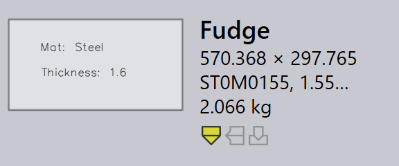

Import

Output settings
Save flat pattern - Aktivieren Sie diese Option, damit die Abwicklung eines importierten Teils gespeichert wird.
Format for flat pattern - Mit dieser Option wählen Sie entweder das DXF- oder das GEO-Dateiformat.
Flat pattern destination - Dies ist der Speicherort, an dem die Abwicklung gespeichert wird.
Import settings
Units for DXF files - Dies ist die Maßeinheit, mit der eine DXF-Datei importiert wird; der Benutzer kann zwischen mm und Zoll wählen.
Material lookup keys - Mehrere Suchbegriffe können durch ein Komma getrennt zugewiesen werden. Wenn ein Teil importiert wird, verwendet TruSmartCAM diese Schlüssel, um nach Materialwerten zu suchen. Die gesuchten Werte werden dann verwendet, um das Rohmaterial aufzulösen. Die ursprünglichen Werte werden in den Misc Properties des Teils gespeichert.
Revision lookup keys - Wenn ein Teil importiert wird, wird der Revisionswert aus der Rohteildatei (der zu importierenden Teiledatei) mit dem vorhandenen Revisionswert im Repository verglichen. Der Import wird abgebrochen, wenn die Revision identisch ist. Die benutzerdefinierte Feldzuordnung wird nun auch für die DXF-Dateien unterstützt. Bei den DXF-Dateien werden die benutzerdefinierten Felddaten aus der Textebene der Zeichnung oder einem PPI-Anhang extrahiert.
Use geometry comparison on same CAD revision - Vergleicht die Geometrie beim Import eines Teils mit derselben CAD-Revision und fordert den Benutzer auf, den Import zu ersetzen oder zu überspringen, wenn Unterschiede erkannt werden. Weitere Details finden Sie unter Importkonfiguration.
Part name keys - Diese Option funktioniert ähnlich wie die Material- und Revision lookup keys. Legen Sie einen oder mehrere Part name keys fest, um den PPI Part name anstelle des Dateinamens als Teilenamen zu verwenden.
Thickness lookup keys - Mehrere Suchbegriffe können durch ein Komma getrennt zugewiesen werden. Wenn ein Teil importiert wird, verwendet TruSmartCAM diese Schlüssel, um nach Dickenwerten zu suchen. Die gesuchten Werte werden dann verwendet, um die Dicke aufzulösen. Die ursprünglichen Werte werden in den Misc Properties des Teils gespeichert.
Thickness comparison fudge - Dies wird beim Nachschlagen des Rohmaterials verwendet, wenn ein Teil importiert wird. TruSmartCAM versucht, das Rohmaterial aufzulösen, nachdem Materialname und Dicke analysiert wurden. Weitere Informationen finden Sie im Thema Dickeltoleranz weiter unten.
Identify shapes after a flat is imported - Wenn ein Teil importiert wird, können innere Formen innerhalb des Teils automatisch erkannt und identifiziert werden.
Shape identification fudge - Der Fudge-Wert für die Formerkennung kann festgelegt werden auf:
-
Global level - Dieser Wert wird als Standard für alle Formen verwendet.
-
Individual Shape Level - Der Standardwert kann überschrieben werden, indem der Fudge-Wert auf der Ebene der einzelnen Form festgelegt wird. Wenn Sie die Form im Dialog Shape Library auswählen, wird der Fudge-Wert angezeigt. Standardmäßig ist dieser auf 0 gesetzt, und für solche Formen wird der globale Standardwert verwendet.
Rotate flat horizontally - Im Allgemeinen sind Schneidmaschinentische rechteckig und breiter. Um die Werkzeugtauglichkeit zu verbessern, drehen Sie das Teil nach dem Import entlang der Teilebreite.
Part rotation threshold - Legen Sie dies als Mindestwert fest, um eine Drehung zu ermöglichen. Jedes Teil, das kleiner als der festgelegte Wert ist, wird nicht gedreht.
Misc settings
Enable pre-import external tools - Aktivieren Sie die Importoption für externe Tools vor dem Import, um Creo Reader zu aktivieren. TruSmartCAM lädt die vorab extrahierten Familieninstanzen des abgelegten Teils hoch. Bitte beachten Sie, dass die Instanzextraktion während des Teile-Uploads (als Operation vor dem Import) durchgeführt wird, sodass die Creo-Software auf dem Computer installiert sein muss, von dem aus das Teil hochgeladen wird.
Ignore drawing colors in Flat thumbnails for clarity - Aktivieren Sie diese Option, um schärfere Graustufen-Miniaturansichten zu erzeugen. Die Ebenenfarben und Textentitäten werden zugunsten der Bildschärfe ignoriert.
Use only one Engine for all import tasks - Wenn diese Option aktiviert ist, wird nur ein Engine-Kern für Importaufgaben verwendet.
Dickeltoleranz
Der Thickness comparison fudge wählt den nächstgelegenen Blechdickenwert aus, wenn eine gewünschte Blechdicke im Bestand nicht verfügbar ist, indem der Dickenwert der Bleche im Bestand verglichen wird.
Nehmen wir zum Beispiel Folgendes an:
-
Wir haben ein Teil mit einer Blechdicke von 1,6 mm und Stahl als Material.

-
Der Wert Thickness comparison fudge beträgt 0,1 mm.

-
Der Bestand enthält Stahlbleche mit einer Dicke von 1,5 mm, 1,55 mm und 1,7 mm.

TruSmartCAM wählt ein Blech mit dem nächstgelegenen Dickenwert aus, nachdem der Wert Thickness comparison fudge (0,1 mm) mit dem importierten Element (mit 1,6 mm) verglichen wurde. In diesem Fall ist 1,55 mm die Auswahl.
